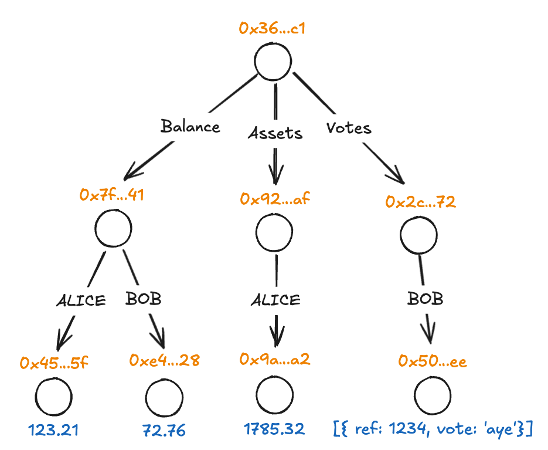

<!DOCTYPE html>
<html lang="en">

<head>
  <meta charset="utf-8" />
  <meta name="viewport" content="width=device-width, initial-scale=1.0, maximum-scale=1.0, user-scalable=no" />

  <title>JSON-RPC Spec</title>
  <link rel="icon" href="./../../assets/favicon.svg" />
  <link rel="shortcut icon" href="./../../assets/favicon.png" />
  <link rel="stylesheet" href="./../../dist/reset.css" />
  <link rel="stylesheet" href="./../../dist/reveal.css" />
  <link rel="stylesheet" href="./../.././assets/styles/PBA-theme.css" id="theme" />
  <link rel="stylesheet" href="./../../css/highlight/shades-of-purple.css" />

  <link rel="stylesheet" href="./../.././assets/styles/custom-classes.css" />

</head>

<body class="site">
  <header class="site-header">
    <!-- This logo is a link only on the watching server, not the production build -->
    <a href="">
      
    </a>
  </header>
  <main class="reveal">
    <article class="slides">
      <section  data-markdown><script type="text/template">

# JSON-RPC Spec
</script></section><section  data-markdown><script type="text/template">
# Recap

## Block States


<aside class="notes"><p><a href="https://excalidraw.com/#json=rV-hfREHgg-bLmhQtMb0o,jc3goNcep8O8tg_HANnz5A">https://excalidraw.com/#json=rV-hfREHgg-bLmhQtMb0o,jc3goNcep8O8tg_HANnz5A</a></p>
<p>Concepts: Finalized, Pruned, Best, Fork</p>
</aside></script></section><section  data-markdown><script type="text/template">
# Recap

## JSON-RPC

- Client - Server RPC protocol with JSON
- Request

```js
{ jsonrpc: "2.0", id: "{req_id}", method: "method_name", params: {…} }
```

- Response

```js
{ jsonrpc: "2.0", id: "{req_id}", result: {…} }
```

- Notification

```js
{ jsonrpc: "2.0", method: "method_name", params: {…} }
```
</script></section><section  data-markdown><script type="text/template">
# Recap

## JSON-RPC Spec

- Spec build for polkadot that uses JSON-RPC
- Group of functions
  - rpc
  - chainSpec
  - <span class="fragment highlight-red">chainHead</span>
  - transaction
  - transactionWatch
  - archive

<aside class="notes"><p>We will focus on chainHead</p>
</aside></script></section><section  data-markdown><script type="text/template">
# JSON-RPC Spec

```js
>> { jsonrpc: "2.0", id: "1", method: "rpc_methods", params: {} }

<< { jsonrpc: "2.0", id: "1", result: [
     "rpc_methods",
     "chainSpec_v1_chainName",
     "chainSpec_v1_genesisHash",
     "chainSpec_v1_properties",
     "chainHead_v1_call",
     "chainHead_v1_follow",
     …
   ]}
```

<aside class="notes"><p>Mention <code>id</code> field can be any string, used to correlate messages.</p>
</aside></script></section><section  data-markdown><script type="text/template">
# Chain Head

- Subscription
  - `chainHead_v1_follow`
  - `chainHead_v1_unfollow`
- Operations <!-- .element: class="fragment" -->
  - `chainHead_v1_header`
  - `chainHead_v1_body`
  - `chainHead_v1_storage`
  - `chainHead_v1_call`
- Control <!-- .element: class="fragment" -->
  - `chainHead_v1_continue`
  - `chainHead_v1_stopOperation`
  - `chainHead_v1_unpin`
</script></section><section  data-markdown><script type="text/template">
# Follow

- Parameters
  withRuntime: boolean
  ```ts
  { jsonrpc: "2.0", id: "1", method: "chainHead_v1_follow", params: [true] }
  ```
  <span class="fragment" style="font-size: 0.7em; opacity: 0.7">(Pro tip: Always use `true`)</span>
- Result: Subscription ID <!-- .element: class="fragment" -->
  ```ts
  { jsonrpc: "2.0", id: "1", result: "B4GEopiw1w38Wkr…MxpkWH4JPd4S" }
  ```
- Notifications <!-- .element: class="fragment" -->
  ```js
  {
      jsonrpc: "2.0",
      method: "chainHead_v1_followEvent",
      params: {
        subscription: "B4GEopiw1w38Wkr…MxpkWH4JPd4S",
        result: {…}
      }
  }
  ```

<aside class="notes"><p>Dig a bit into the <code>withRuntime</code> parameter, and why using <code>false</code> it&#39;s a bad idea 99% of the time.</p>
<p>The notifications we will see will be the value of <code>result</code>, we omit the JSON-RPC wrapper and subscription parameter for simplicity.</p>
</aside></script></section><section  data-markdown><script type="text/template">
## Initialized

```ts
{
  event: "initialized",
  finalizedBlockHashes: [
    "0x00…000",
    …
    "0x00…000"
  ],
  finalizedBlockRuntime: {…}
}
```
</script></section><section  data-markdown><script type="text/template">
## New Block

```ts
{
  event: "newBlock",
  blockHash: "0x00…000",
  parentBlockHash: "0x00…000",
  newRuntime: {…}
}
```
</script></section><section  data-markdown><script type="text/template">
## Best Block Changed

```ts
{
  event: "bestBlockChanged",
  bestBlockHash: "0x00…000"
}
```
</script></section><section  data-markdown><script type="text/template">
## Finalized

```ts
{
  event: "finalized",
  finalizedBlockHashes: [
    "0x00…000",
    …
    "0x00…000"
  ],
  prunedBlockHashes: [
    "0x00…000",
    …
    "0x00…000"
  ],
}
```
</script></section><section  data-markdown><script type="text/template">
# Follow


<aside class="notes"><p>Example of notifications emitted by a follow subscription based on this image.</p>
<p>Show papi-console with the following logsRecorder:</p>
<pre><code class="language-ts">/*
import.meta.env.DEV &amp;&amp; source.id !== &quot;polkadot_people&quot;
    ? withLogFollowEvents(console.debug, provider)
    : provider
*/
const withLogFollowEvents = (logFn: (...args: string[]) =&gt; void, provider: JsonRpcProvider): JsonRpcProvider =&gt; {
  const events = [&quot;initialized&quot;, &quot;newBlock&quot;, &quot;bestBlockChanged&quot;, &quot;finalized&quot;, &quot;stop&quot;];

  return onMsg =&gt; {
    let followId = &quot;&quot;;

    const connection = provider(message =&gt; {
      onMsg(message);
      if (message.includes(`&quot;id&quot;:&quot;${followId}&quot;`) || events.some(m =&gt; message.includes(`&quot;event&quot;:&quot;${m}&quot;`))) {
        const { event, ...rest } = JSON.parse(message)?.params?.result || {};
        logFn(`&lt;&lt; ${event}`, rest);
      }
    });

    return {
      send(message) {
        if (message.includes(`&quot;method&quot;:&quot;chainHead_v1_follow&quot;`)) {
          const parsed = JSON.parse(message);
          followId = parsed.id;
          logFn(`&gt;&gt; chainHead_v1_follow`, parsed.params);
        }
        connection.send(message);
      },
      disconnect() {
        connection.disconnect();
      },
    };
  };
};
</code></pre>
</aside></script></section><section  data-markdown><script type="text/template">
# Block Pinning

- Light-client friendly
- Initialized event `finalizedBlockHashes`
- New Block event `blockHash`
- `chainHead_v1_unpin`
</script></section><section  data-markdown><script type="text/template">
## Stop

```ts
{
  event: "stop";
}
```
</script></section><section  data-markdown><script type="text/template">
# Operations

- Query the chain

- Send an operation request
- Receive an Operation ID as a result
- Receive a Follow Event with the Operation ID with the actual result
</script></section><section  data-markdown><script type="text/template">
## Header

<ul>
<li>
  Parameters

```ts
[followSubscription: string, hash: string]

{ jsonrpc: "2.0", id: "1",
  method: "chainHead_v1_header",
  params: ["B4GEopiw1w38Wkr…MxpkWH4JPd4S", "0x00…00"]
}
```

</li>
<li class="fragment">
  Result: SCALE-encoded header

```ts
{ jsonrpc: "2.0", id: "1", result: "0x00…00" }
```

</li>
</ul>

<aside class="notes"><p>The only exception, as the header is guaranteed to be already in the node.</p>
</aside></script></section><section  data-markdown><script type="text/template">
## Body

<ul>
<li>
  Parameters

```ts
[followSubscription: string, hash: string]

{ jsonrpc: "2.0", id: "1",
  method: "chainHead_v1_body",
  params: ["B4GEopiw1w38Wkr…MxpkWH4JPd4S", "0x00…00"]
}
```

</li>
<li class="fragment">
  Result: Operation ID

```ts
{ jsonrpc: "2.0", id: "1", result: "GhwhKA4yL3…Roc29d8e" }
```

</li>
<li class="fragment">
  Notification

```ts
{
  event: "operationBodyDone",
  operationId: "GhwhKA4yL3…Roc29d8e",
  value: [
    "0x00…00",
    …
    "0x00…00",
  ]
}
```

</li>
</ul>

<aside class="notes"><p>The only exception, as the header is guaranteed to be already in the node.</p>
</aside></script></section><section  data-markdown><script type="text/template">
### JSON-RPC Spec Playground

<aside class="notes"><p>Show basic correlating messages, pinning / unpinning</p>
<pre><code class="language-ts">import { chainSpec } from &quot;polkadot-api/chains/westend2&quot;;
import { getSmProvider } from &quot;polkadot-api/sm-provider&quot;;
import { start } from &quot;polkadot-api/smoldot&quot;;

const smoldot = start({
  maxLogLevel: 0,
});

const provider = getSmProvider(smoldot.addChain({ chainSpec }));

let id = 0;
const connection = provider(message =&gt; {
  const msg = JSON.parse(message);
  ellipsisBody(msg);
  console.log(msg);
  if (msg.method === &quot;chainHead_v1_followEvent&quot; &amp;&amp; msg.params.result.event === &quot;newBlock&quot;) {
    const reqId = id++;
    console.log(&quot;Request body&quot;, reqId);
    connection.send(
      JSON.stringify({
        jsonrpc: &quot;2.0&quot;,
        id: reqId,
        method: &quot;chainHead_v1_body&quot;,
        params: [msg.params.subscription, msg.params.result.blockHash],
      })
    );
  }
});

connection.send(
  JSON.stringify({
    jsonrpc: &quot;2.0&quot;,
    id: id++,
    method: &quot;chainHead_v1_follow&quot;,
    params: [true],
  })
);

function ellipsisBody(res: any) {
  if (res.method === &quot;chainHead_v1_followEvent&quot; &amp;&amp; res.params.result.event === &quot;operationBodyDone&quot;) {
    res.params.result.value = res.params.result.value.map((v: string) =&gt; (v.length &gt; 32 ? v.slice(0, 32) + &quot;…&quot; : v));
  }
}
</code></pre>
</aside></script></section><section  data-markdown><script type="text/template">
## Runtime Call

<ul>
<li>
  Parameters

```ts
[subscription: string, hash: string, fnName: string, params: string[]]

{ jsonrpc: "2.0", id: "1",
  method: "chainHead_v1_body",
  params: [
    "B4GEo…JPd4S",
    "0x00…00",
    "AccountNonceApi_account_nonce",
    "0x00…00"
  ]
}
```

</li>
<li class="fragment">
  Notification

```ts
{
  event: "operationCallDone",
  operationId: "GhwhKA4yL3…Roc29d8e",
  output: "0x00…00"
}
```

</li>
</ul>
</script></section><section  data-markdown><script type="text/template">
### Fetch metadata playground

<aside class="notes"><pre><code class="language-ts">import { chainSpec } from &quot;polkadot-api/chains/westend2&quot;;
import { getSmProvider } from &quot;polkadot-api/sm-provider&quot;;
import { start } from &quot;polkadot-api/smoldot&quot;;
import { decAnyMetadata, u32 } from &quot;@polkadot-api/substrate-bindings&quot;;
import { toHex } from &quot;polkadot-api/utils&quot;;

const smoldot = start({
  maxLogLevel: 0,
});

const provider = getSmProvider(smoldot.addChain({ chainSpec }));

let id = 0;
const connection = provider(message =&gt; {
  const msg = JSON.parse(message);

  if (msg.method === &quot;chainHead_v1_followEvent&quot;) {
    if (msg.params.result.event === &quot;initialized&quot;) {
      const lastFinalized = msg.params.result.finalizedBlockHashes.at(-1);
      connection.send(
        JSON.stringify({
          jsonrpc: &quot;2.0&quot;,
          id: `${id++}-call`,
          method: &quot;chainHead_v1_call&quot;,
          params: [msg.params.subscription, lastFinalized, &quot;Metadata_metadata_at_version&quot;, toHex(u32.enc(15))],
        })
      );
      msg.params.result.finalizedBlockHashes.forEach((hash: string) =&gt;
        connection.send(
          JSON.stringify({
            jsonrpc: &quot;2.0&quot;,
            id: `${id++}-unpin`,
            method: &quot;chainHead_v1_unpin&quot;,
            params: [msg.params.subscription, hash],
          })
        )
      );
    }
    if (msg.params.result.event === &quot;newBlock&quot;) {
      connection.send(
        JSON.stringify({
          jsonrpc: &quot;2.0&quot;,
          id: `${id++}-unpin`,
          method: &quot;chainHead_v1_unpin&quot;,
          params: [msg.params.subscription, msg.params.result.blockHash],
        })
      );
    }

    if (msg.params.result.event === &quot;operationCallDone&quot;) {
      const metadata = decAnyMetadata(msg.params.result.output);
      console.log(&quot;received metadata&quot;);
      console.log(metadata);
    } else {
      console.log(msg);
    }
  }
});

connection.send(
  JSON.stringify({
    jsonrpc: &quot;2.0&quot;,
    id: id++,
    method: &quot;chainHead_v1_follow&quot;,
    params: [true],
  })
);
</code></pre>
</aside></script></section><section ><section data-markdown><script type="text/template">
# Chain Storage

- State transition function
- How is the state structured? 🤔
</script></section><section data-markdown><script type="text/template">
## High-level view

<table>
  <thead>
    <tr>
      <th>Key</th>
      <th>Value</th>
    </tr>
  </thead>
  <tbody>
    <tr>
      <td>Balance(ALICE)</td>
      <td>123.21 DOT</td>
    </tr>
    <tr>
      <td>Balance(BOB)</td>
      <td>72.76 DOT</td>
    </tr>
    <tr>
      <td>Assets(USDC, ALICE)</td>
      <td>1785.32 USDC</td>
    </tr>
    <tr>
      <td>Votes(BOB, MediumSpender)</td>
      <td>[{ ref: 1234, vote: 'aye' }]</td>
    </tr>
  </tbody>
</table>
</script></section><section data-markdown><script type="text/template">
## Inner structure

- It's still a key-value store!
- But it's ✨Merklized✨
</script></section><section data-markdown><script type="text/template">
## Merkle Tree Recap



<aside class="notes"><p><a href="https://excalidraw.com/#json=udTXjn9JdUlGMx0UMv3fq,9EeDxmFCZW2IgCwMgSpsjQ">https://excalidraw.com/#json=udTXjn9JdUlGMx0UMv3fq,9EeDxmFCZW2IgCwMgSpsjQ</a></p>
</aside></script></section><section data-markdown><script type="text/template">
## Merkle Tree Recap

<table>
  <thead>
    <tr>
      <th>Key</th>
      <th>Value</th>
    </tr>
  </thead>
  <tbody>
    <tr>
      <td>0x45…5f</td>
      <td>123.21</td>
    </tr>
    <tr>
      <td>0xe4…28</td>
      <td>72.76</td>
    </tr>
    <tr>
      <td>0x7f…41</td>
      <td>{ ALICE: 0x45…5f, BOB: 0xe4…28 }</td>
    </tr>
    <tr>
      <td>0x9a…a2</td>
      <td>1785.32</td>
    </tr>
    <tr>
      <td>0x92…af</td>
      <td>{ ALICE: 0x9a…a2 }</td>
    </tr>
    <tr>
      <td>0x50…ee</td>
      <td>[{ ref: 1234, vote: 'aye' }]</td>
    </tr>
    <tr>
      <td>0x2c…72</td>
      <td>{ BOB: 0x50…ee }</td>
    </tr>
    <tr>
      <td>0x36…c1</td>
      <td>{ Balance: 0x7f…41, Assets: 0x92…af, Votes: 0x2c…72 }</td>
    </tr>
  </tbody>
</table>

<aside class="notes"><p>Explain structure, then explain an example of how the storage is traversed.</p>
</aside></script></section><section data-markdown><script type="text/template">
## But there's more!

- It's important to keep the merkle tree balanced.
- To avoid attacks, keys are hashed.
- But if they are hashed
  - It would be hard to know the original key for a given entry
- Solution
  - Hash parts of the key individually.
  - Include the original value in the key\*.

"0x2e7…847{Balances}83a…231{BOB}"
</script></section><section data-markdown><script type="text/template">
## Key concepts

<pba-cols>
<pba-col style="flex-shrink: 0">

- Key
- Value
- Hash
- Merkle value

</pba-col>
<pba-col>

</pba-col>
<pba-cols>
</script></section><section data-markdown><script type="text/template">
<pba-cols>
<pba-col style="flex-shrink: 0">

## Can do

- Access a value
- Subtree differences
- Get values by subtree
- Get storage proofs

</pba-col>
<pba-col>

## Can't do

- Query values
- Get key from a value

</pba-col>
<pba-cols>

<aside class="notes"><p>Explain that you can&#39;t query for specific values unless they are part of a subtree.</p>
<p>E.g. the votes for a given referendum, as the storage is Votes -&gt; Account -&gt; Referendum</p>
</aside></script></section></section><section ><section data-markdown><script type="text/template">
# Storage

- followSubscription: string
- hash: string
- items: Array
  - key: string
  - type
    - value
    - hash
    - closestDescendantMerkleValue
    - descendantsValues
    - descendantsHashes
- childTrie
</script></section><section data-markdown><script type="text/template">
## Storage

- You can query multiple values.
- The node might drop some of them.

```ts
  {
    result: "started",
    operationId: "…",
    discardedItems: 5
  }
```

- Just try later!
</script></section><section data-markdown><script type="text/template">
## Storage

```ts
{
  event: "operationStorageItems",
  operationId: "…",
  items: [{
    key: "0x00…00",
    value: "0x00…00",
    hash: "0x00…00",
    closestDescendantMerkleValue: "0x00…00",
  }, …]
}

{
  event: "operationStorageDone",
  operationId: "…",
}
```
</script></section><section data-markdown><script type="text/template">
## Storage

```ts
{
  event: "operationWaitingForContinue",
  operationId: "…"
}

// [followSubscription: string, operationId: string]
{ jsonrpc: "2.0", id: "1",
  method: "chainHead_v1_continue",
  params: ["B4GEopiw1w38Wkr…MxpkWH4JPd4S", "…"]
}
```
</script></section></section><section  data-markdown><script type="text/template">
## Light-Client and RFC-0009

[Improved light client requests networking protocol](https://github.com/polkadot-fellows/RFCs/blob/main/text/0009-improved-net-light-client-requests.md)

<aside class="notes"><p>tl;dr; Light Clients currently can&#39;t request the hashes, they must download the values. RFC-0009 adds more granularity</p>
<ul>
<li>Check whether a key exists in the storage.</li>
<li>Check for storage changes between two blocks.</li>
<li>Query all descendants without needing round trips.</li>
</ul>
</aside></script></section><section ><section data-markdown><script type="text/template">
# Challenges
</script></section><section data-markdown><script type="text/template">
## Correlating messages

- It's not a simple `fetch`.
- Abstraction to correlate
  - JSON-RPC message ID
  - Follow Subscription
  - Operation ID
- `@polkadot-api/substrate-client`
</script></section><section data-markdown><script type="text/template">
## Handling forks


</script></section><section data-markdown><script type="text/template">
### Operation inaccessible
</script></section><section data-markdown><script type="text/template">
## Block pinning
</script></section><section data-markdown><script type="text/template">
## Stop event recovery
</script></section></section>
    </article>
  </main>

  <script src="./../../dist/reveal.js"></script>

  <script src="./../../plugin/markdown/markdown.js"></script>
  <script src="./../../plugin/highlight/highlight.js"></script>
  <script src="./../../plugin/zoom/zoom.js"></script>
  <script src="./../../plugin/notes/notes.js"></script>
  <script src="./../../plugin/math/math.js"></script>

  <script src="./../../assets/plugin/mermaid.js"></script>
  <script src="./../../assets/plugin/mermaid-theme.js"></script>

  <script src="./../../assets/plugin/chart/chart.js"></script>
  <script src="./../../assets/plugin/chart/chart.min.js"></script>

  <script src="./../../assets/plugin/tailwindcss.min.js"></script>

  <script>
    function extend() {
      var target = {};
      for (var i = 0; i < arguments.length; i++) {
        var source = arguments[i];
        for (var key in source) {
          if (source.hasOwnProperty(key)) {
            target[key] = source[key];
          }
        }
      }
      return target;
    }

    // default options to init reveal.js
    var defaultOptions = {
      controls: true,
      progress: true,
      history: true,
      center: true,
      transition: 'default', // none/fade/slide/convex/concave/zoom
      slideNumber: true,
      mermaid: {
        startOnLoad: false,
        logLevel: 3,
        theme: 'base',
        themeVariables: {
          primaryColor: purple,
          primaryTextColor: white,
          primaryBorderColor: pink,
          lineColor: pink,
          secondaryColor: lightPurple,
          tertiaryColor: lightPurple,
        },
      },
      chart: {
        defaults: {
          color: 'lightgray', // color of labels
          scale: {
            beginAtZero: true,
            ticks: { stepSize: 1 },
            grid: { color: "lightgray" }, // color of grid lines
          },
        },
        line: { borderColor: ["#ccc", "#E6007A", "#6D3AEE"], "borderDash": [[5, 10], [0, 0]] },
        bar: { backgroundColor: ["#ccc", "#E6007A", "#6D3AEE"] },
      },
      plugins: [
        RevealMarkdown,
        RevealHighlight,
        RevealZoom,
        RevealNotes,
        RevealMath,
        RevealMermaid,
        RevealChart
      ]
    };

    // options from URL query string
    var queryOptions = Reveal().getQueryHash() || {};

    var options = extend(defaultOptions, {"width":1400,"height":900,"margin":0,"minScale":0.2,"maxScale":2,"transition":"none","controls":true,"progress":true,"center":true,"slideNumber":true,"backgroundTransition":"fade"}, queryOptions);
  </script>


  <script>
    Reveal.initialize(options);
  </script>
</body>

</html>
